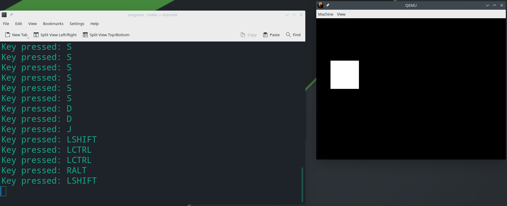

操作系统-设计与实现-二
前言
这一章没有新的内容，仅仅是实现课程中的L0实验
L0直接运行在硬件上的小游戏
实验背景
传统上，操作系统被认为就是”写汇编”、”跟底层打交道”。但实际上，操作系统和硬件之间的关系被夸大了。操作系统实际上不过就是一个直接运行在计算机上的(高级语言)程序而已，只是会在适当的时候调用操作系统提供的机制。
因此，在初始化完成后设置好一个没有标准库的C程序运行环境，其中包含栈区、静态数据、堆区;代码从main函数开始执行，并允许我们在程序运行过程中直接、独占式地访问操作系统中的物理设备(例如显示器、计时器)和响应中断，即可实现当下主流的操作系统
实验描述
实验要求1:实现AbstractMachine中klib中缺失的函数
AbstractMachine的项目中包含一个基础运行库的框架klib，其中包含了方便你编写bare-metal程序的系列库函数，例如
assert、printf和memcpy等。
尽可能实现有能力实现的代码实验要求2:实现可移植的、直接运行在计算机硬件上的小游戏
你需要编写一个直接运行在AbstractMachine上(仅仅是用IOE拓展，不使用其他硬件机制如中断/异常/虚拟存储/多处理器)的小游戏;满足:
- 有肉眼可辨认的图形输出
- 能使用键盘与游戏交互
- 游戏使用的内存(代码、静态数据总和不超过1MiB、堆区_heap使用不超过1MiB)，因此不必考虑复杂的图形;
- 按ESC键后调用
_halt()退出;除此之外游戏程序永不调用_halt()结束，Game Over后按键重新开始只要程序不崩溃，哪怕只有几个像素点在屏幕上乱动也可以。虽然不限制实现什么游戏，但仍需要在移植性/通用性上对代码做出一定的保证:
- 兼容很简单的处理器:即小游戏运行中只调用TRM和IOE API，而不使用其他API
- 你的游戏应当是可以在多个硬件体系之间移植的，考虑兼容以下情况:
- 适配不同的屏幕大小。不同的体系结构中，屏幕大小可能是320x200、640x480、800x600等，你的游戏最好都能在所有分辨率下都获得不错的体验;
- 同minilabs一样，你的程序可能运行在32/64-bit平台，因此你应当使用
intptr_t或uintptr_t来保存指针数值;- 兼容大/小端，因此禁止把不同大小的指针类型强制转换
实验指南
根据前面的描述，整个实验由两个小实验构成—实现klib库函数;实现小游戏。这里给出这两个小实验需要注意的细节
实现库函数
实际上，实现库函数是普通的C语言练习题;但需要注意的是，编写可移植代码时，尽量使用C标准提供的机制，而非做一些对硬件的假设
访问I/O设备
没有库函数的C语言程序类似于状态机，仅仅可以完成纯粹的”计算”。我们可以通过TRM和IOE的API，与外界的I/O设备进行交互，从而完成相关的操作。
实现游戏
AbstractMachine中附带的AMGame使用了一种框架，这里再提供一个不同的框架，来实现游戏，如下所示
1
2
3
4
5
6
7
8
9
10next_frame = 0;
while (1) {
while (uptime() < next_frame) ; // 等待一帧的到来
while ((key = readkey()) != _KEY_NONE) {
kbd_event(key); // 处理键盘事件
}
game_progress(); // 处理一帧游戏逻辑，更新物体的位置等
screen_update(); // 重新绘制屏幕
next_frame += 1000 / FPS; // 计算下一帧的时间
}
其使用轮询(polling)等待下一帧时刻的到来;等到帧时刻到来，就读取键盘按键并处理;然后模拟这一帧中游戏发生的事情即可。
小游戏和操作系统
实际上，游戏和操作系统的工作原理有很多相像的地方，正如前面介绍的，简化的游戏的主循环如下所示
1
2
3
4
5
6
7
8
9
10
11while (1) {
// 在每一个时间片，例如每 16.7ms (60 fps)
wait_for_frame();
// 做完这一个时间片内需要完成的工作
int scanlines = 262;
while (scanlines-- > 0) {
ppu_cycle(); // 更新游戏图像
psg_detect_key(); // 读取按键，更新游戏逻辑
}
}
而如果在程序的主循环中，不再是一次执行一帧，而是”每一帧”都执行另一个程序，程序执行完后返回主循环，则可以抽象为批处理系统的流程
1
2
3
4
5
6
7while (1) {
// 等待键盘输入需要运行的命令
Job *job = wait_for_job();
// 加载并执行命令
load(job);
}
有了上面的分析，可以简单的剧透一下批处理系统的工作流程
- 批处理系统执行的命令由键盘输入，因此
wait_for_job()就是从键盘读取按键，并解析成命令，与游戏读取按键类似 - 执行的命令(job)是保存在磁盘上的ELF格式的二进制文件，则使用硬件提供的I/O指令，将存储设备中二进制文件加载到内存中，然后在通过跳转，将控制权交给job;等job结束后函数返回，重新回到批处理系统，从而完成一个简易的操作系统，其
load()部分的简化代码如下1
2
3
4
5copy_from_disk(elf32, 4096, 0); // 从磁盘读取 ELF 文件头
if (elf->e_machine == EM_386) { // x86 (32-bit)
load_elf32(elf32); // 从磁盘加载二进制文件到 ELF 文件描述的位置
((void(*)())(uint32_t)elf32->e_entry)(); // 跳转到加载的代码执行
}
实验环境
在之前从github上拉取下来的实验目录下，切换到master分支，继续拉取L0实验的代码即可
1
git remote add jyy https://hub.fastgit.org/NJU-ProjectN/os-workbench.git && git checkout master && git pull jyy L0
本次实验可能还需要运行在qemu实验环境下，因此还需要安装qemu实验环境，执行如下命令
1
sudo pacman -S qemu qemu-extra-arch
最后，编译时还可能需要一些额外的库
1
sudo pacman -S gcc-multilib slib
最后，由于是在manjaro中进行实验，需要设置一些额外的软链接，使程序正常运行
1
2
3sudo ln -s /usr/bin/x86_64-pc-linux-gnu-gcc /usr/bin/x86_64-linux-gnu-gcc
sudo ln -s /usr/bin/ld /usr/bin/x86_64-linux-gnu-ld
sudo ln -s /usr/bin/objcopy /usr/bin/x86_64-linux-gnu-objcopy
实验实现
下面是个人的思路及其实现，实验实现
实现AbstractMachine中klib的缺失函数
即这里需要实现一些常用的C语言函数，这里会实现部分功能(类似malloc等，由于还未建立虚拟内存机制，则当下无法实现
函数实现
void *memset(void *s, int c, size_t n)
根据man 3 memset说明，其将s指向的地址的前n个字节，设置为字节c，因此我们只需要将s当作unsigned char *类型的指针即可，然后依次赋值1
2
3
4
5
6void *memset(void *s, int c, size_t n) {
for(size_t i = 0; i != n; ++i) {
((unsigned char*)s)[i] = (unsigned char)c;
}
return s;
}void *memcpy(void *dst, const void *src, size_t n)
和1.是类似的思路，将其当作unsigned char*类型进行遍历赋值即可1
2
3
4
5
6void *memcpy(void *dst, const void *src, size_t n) {
for(size_t i = 0; i != n; ++i) {
((unsigned char*)dst)[i] = ((const unsigned char*)src)[i];
}
return dst;
}void *memmove(void *dst, const void *src, size_t n)
其和2的作用是一样的，但是该方法src和dst可能重合。因此先复制到中间变量，然后在复制到目标地址中。其实相当于调用两次memcpy即可1
2
3
4
5
6
7
8
9
10void *memmove(void *dst, const void *src, size_t n) {
//首先申请相关大小的堆空间
void *temp = malloc(n);
assert(temp);
memcpy(temp, src, n);
memcpy(dst, temp, n);
free(temp);
return dst;
}int memcmp(const void *s1, const void *s2, size_t n)
根据man 3 memcpy可知，memcpy将s1和s2当作unsigned char类型，而其返回结果是s1和s2第一个不相等的字符相减的结果。1
2
3
4
5
6
7int memcpy(const void *s1, const void *s2, size_t n) {
for(size_t i = 0; i != n; ++i) {
if(((const unsigned char*)s1)[i] < ((const unsigned char*)s2)[i]) { return -1; }
else if(((const unsigned char*)s1)[i] > ((const unsigned char*)s2)[i]) { return 1; }
}
return 0;
}size_t strlen(const char *s)
即遍历直到第一个为0的字符为止1
2
3
4
5
6size_t strlen(const char *s) {
size_t len = 0;
while(s[len++]) {;}
return len;
}char *strcat(char *dst, const char *src)
根据man 3 strcat可知，其将src指向的字符串拼接到dst后面，并且可以默认dst留有足够的空间(即dst剩余空间足够容纳src指向的字符串，及末尾的’\x00’)1
2
3
4
5
6
7
8
9
10
11char *strcat(char *dst, const char *src) {
size_t dstLen = 0, srcLen = 0;
while(dst[dstLen++]) {; }
while(src[srcLen]) {
dst[dstLen++] = src[srcLen++];
}
dst[dstLen] = 0;
return dst;
}char *strcpy(char *dst, const char *src)
即其复制的时候，以src的’\x00’结束，并且’\x00’字符也会被复制1
2
3
4
5
6
7
8
9char *strcpy(char *dst, const char *src) {
size_t len = 0;
while(src[len]) {
dst[len] = src[len];
++len;
}
dst[len] = 0;
return dst;
}char *strncpy(char *dst, const char *src, size_t n)
和7.的思路是一致的，但是其确保每次都写入n个字节——当src个数不足n个时，以’\x00’进行拓展;当个数超过n个时，则进行截断。注意的是，如果src的第一个’\x00’的在第n个之后，则复制的时候，不会复制’\x00’1
2
3
4
5
6
7
8
9
10char *strncpy(char *dst, const char *src, size_t n) {
size_t len = 0;
while(src[len] && len < n) {
dst[len] = src[len];
++len;
}
while(len < n) { dst[len++] = 0; }
return dst;
}int strcmp(const char *s1, const char *s2)
思路和memcmp完全一样，但需要注意以下如果s1字符串和s2字符串长度和每一位字符都相等，其需要进行中止1
2
3
4
5
6
7int strcmp(const char *s1, const char *s2) {
for(size_t i = 0;s1[i] || s2[i]; ++i) {
if(s1[i] < s2[i]) { return -1; }
else if(s1[i] > s2[i]) { return 1; }
}
return 0;
}int strncmp(const char *s1, const char *s2, size_t n)
其和9.的思路也是完全一样的，除了额外添加的中止条件:长度小于等于n1
2
3
4
5
6int strncmp(const char *s1, const char *s2, size_t n) {
for(size_t i = 0; i < n && (s1[i] || s2[i]); ++i) {
if(s1[i] < s2[i]) { return -1; }
else if(s1[i] > s2[i]) { return 1; }
}
return 0;
程序编译和链接
最后，我们可以使用上述这些标准库，实现一个简单的测试样例，首先在文件系统下任意路径下创建一个测试文件夹，并创建一个测试文件.c和对应的Makefile文件，如下所示
1
2
3
4
5
6
int main(int argc, const char *argv) {
printf("%s", "Hello, world\n");
return 0;
}
1 | NAME := test |
然后需要进行编译,文件中已经设置好了AM_HOME环境变量为真实的am文件夹路径，则执行make命令即可，如下所示
1
make ARCH=x86_64-qemu run
实现可移植的、直接运行在计算机硬件上的小游戏
游戏实现
实际上在amgame文件夹下，已经有比较完善的程序框架了，因此我们只需要在这个基础上进行补全即可。
而对于小游戏，我之前在coursera学习了一门很有意思的课Build a Modern Computer from First Principles: Nand to Tetris, 在这门课上有一个很有意思的游戏——“Square Dance”，准备实现这个游戏
这个游戏实现起来并不是很难，只需要在屏幕上根据相关参数显示正方形即可，其相关的参数包括正方形的大小和正方形的位置。
因此我们使用如下信息记录正方形的参数
1 | typedef struct SQUARE { |
其中x、y分别表示正方形左顶点在显示器上的坐标，而edge则表示正方形的边长, side表示正方形的单位长度在显示器上的像素点个数
下面则实现在显示器上画出该图形，模板已经给了一个画直线的代码，然后进行简单包装即可(即增量的画出正方形变化的像素即可)，这里需要特别注意，避免一次画大量数据，导致爆栈。
其次，则是对于正方形的操作，其支持位移和形变，即上移’↑’、下移’↓’、左移’←’和右移’→’的位移变化，以及放大’+’和缩小’-‘的形状变化。这里需要注意的是，其位移变化不能让正方形超出边界，其形状变化同样也不可以让正方形过大或过小。
最终的代码如下所示
1
2
3
4
5
6
7
8
9
10
11
12
13
14
15
16
17
18
19
20
21
22
23
24
25
26
27
28
29
30
31
32
33
34
35
36
37
38
39
40
41
42
43
44
45
46
47
48
49
50
51
52
53
54
55
56
57
58
59
60
61
62
63
64
65
66
67
68
69
70
71
72
73
74
75
76
77
78
79
80
81
82
83
84
85
86
87
88
89
90
91
92
93
94
95
96
97
98
99
100
101
102
103
104
105
106
107
108
109
110
111
112
113
114
115
116
117
118
119
120
121
122
123
124
125
126
127
128
129
130
131
132
133
134
135
136
137
138
139
140
141
142
143
144
145
146
147
148
149
150
151
152
153
154
155
156
157
158
159
160
161
162
163
164
165
166
167
168
169
170
171
172
typedef struct SQUARE {
int x, y, edge, side;
} Square;
Square square;
//为了避免爆栈，所以一次只画一个单元的图像
void safe_draw_line(int x, int y, int w, int h, int color) {
int row = x, row_end = x + w;
while(row < row_end) {
int col = y, col_end = y + h;
while(col < col_end) {
draw_line(row, col, square.side, square.side, color);
col += square.side;
}
row += square.side;
}
}
//检查左边碰壁;原始最右侧画成黑色，新的最左侧画成白色
void move_left() {
if(square.x - 1 >= 0) {
//(x + edge - 1, y)起点的宽度为1，高度为edge的黑线
safe_draw_line((square.x + square.edge - 1) * square.side, square.y * square.side, square.side, square.edge * square.side, BLACK);
//(x - 1, y)起点的宽度为1，高度为edge的白线
safe_draw_line((square.x - 1) * square.side, square.y * square.side, square.side, square.edge * square.side, WHITE);
--square.x;
}
}
//检查右边碰壁;原始最左侧画成黑色，新的最右侧画成白色
void move_right() {
if((square.x + square.edge) * square.side < w) {
//(x, y)起点的宽度为1，高度为edge的黑线
safe_draw_line(square.x * square.side, square.y * square.side, square.side, square.edge * square.side, BLACK);
//(x + edge, y)起点的宽度为1，高度为edge的白线
safe_draw_line((square.x + square.edge) * square.side, square.y * square.side, square.side, square.edge * square.side, WHITE);
++square.x;
}
}
//检查上边碰壁;原始最下侧画成黑色，新的最上侧画成白色
void move_up() {
if(square.y - 1 >= 0) {
//(x, y + edge - 1)起点的宽度为edge，高度为1的黑线
safe_draw_line(square.x * square.side, (square.y + square.edge - 1) * square.side, square.edge * square.side, square.side, BLACK);
//(x, y - 1)起点的宽度为edge，高度为1的白线
safe_draw_line(square.x * square.side, (square.y - 1) * square.side, square.edge * square.side, square.side, WHITE);
--square.y;
}
}
//检查下边碰壁;原始最上侧画成黑色，新的最下侧画成白色
void move_down() {
if((square.y + square.edge) * square.side < h) {
//(x, y)起点的宽度为edge，高度为1的黑线
safe_draw_line(square.x * square.side, square.y * square.side, square.edge * square.side, square.side, BLACK);
//(x, y + edge)起点的宽度为edge，高度为1的白线
safe_draw_line(square.x * square.side, (square.y + square.edge) * square.side, square.edge * square.side, square.side, WHITE);
++square.y;
}
}
//检查边长不能小于1;将最下方和最右方的边画成黑色
void figure_small() {
if(square.edge - 1 > 0) {
//(x, y + square.edge - 1)起点的宽度为edge，高度为1的黑线
safe_draw_line(square.x * square.side, (square.y + square.edge - 1) * square.side, square.edge * square.side, square.side, BLACK);
//(x + square.edge - 1, y)起点的宽度为1， 高度为edge - 1的黑线
safe_draw_line((square.x + square.edge - 1) * square.side, square.y * square.side, square.side, (square.edge - 1) * square.side, BLACK);
--square.edge;
}
}
//检查增加的边长不能越界;将新的下方和最右方的边画成白色
void figure_big() {
if((square.x + square.edge) * square.side < w && (square.y + square.edge) * square.side < h) {
//(x, y + edge)起点的宽度为edge + 1，高度为1的白线
safe_draw_line(square.x * square.side, (square.y + square.edge) * square.side, (square.edge + 1) * square.side, square.side, WHITE);
//(x + square.edge, y)起点的宽度为1， 高度为edge的白线
safe_draw_line((square.x + square.edge) * square.side, square.y * square.side, square.side, square.edge * square.side, WHITE);
++square.edge;
}
}
void square_init() {
square.x = square.y = 0;
square.edge = 1;
square.side = 16;
//画一条宽度为edge， 高度为edge的线即可
safe_draw_line(square.x * square.side, square.y * square.side, square.edge * square.side, square.edge * square.side, WHITE);
}
// Operating system is a C program!
int main(const char *args) {
ioe_init();
gpu_init();
puts("mainargs = \"");
puts(args); // make run mainargs=xxx
puts("\"\n");
//初始化方块
square_init();
puts("Press any key to see its key code...\n");
while (1) {
const char *key = print_key();
//方便肉眼观察
int delta = 262;
while(delta--) {;}
if(!strcmp(key, "W")) { move_up(); }
else if(!strcmp(key, "S")) { move_down(); }
else if(!strcmp(key, "A")) { move_left(); }
else if(!strcmp(key, "D")) { move_right(); }
else if(!strcmp(key, "J")) { figure_big(); }
else if(!strcmp(key, "K")) { figure_small(); }
else if(!strcmp(key, "ESCAPE")) { halt(0); }
}
return 0;
}
游戏编译和链接
最后，我们在amgame路径下，执行如下命令，进行游戏的编译和运行
1
make ARCH=x86_64-qemu run
游戏的运行结果如下所示
